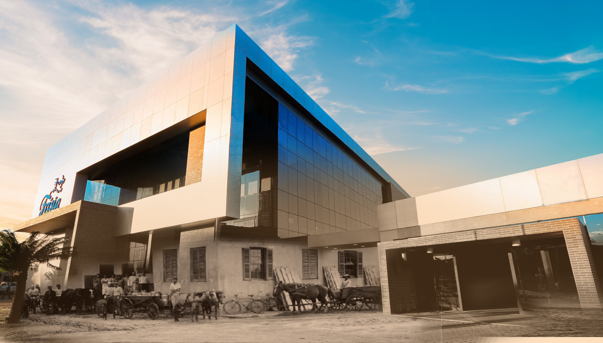

Empresa Pioneira - FRÍSIA
Nossa História
As primeiras famílias holandesas se estabelecem na região, motivadas pelo plano de colonização estabelecido pela Brazil Railway Company, empresa inglesa especializada na construção de linhas férreas. Pelo contrato de trabalho, cada colono recebia o básico para se instalar e começar a sua nova vida, com um prazo de dez anos para pagamento. Começa a história da Frísia Cooperativa Agroindustrial. Da união dos pioneiros, nasce a primeira iniciativa de criar uma cooperativa de produção no Brasil. A partir da produção de leite, do queijo e da manteiga, tem origem a Sociedade Cooperativa Hollandeza de Lacticínios. É construída a primeira fábrica de queijos da entidade. A sociedade dá origem à marca Batavo, homenagem à região da Batávia, localizada no sul da Holanda, famosa pela sua tradição agrícola. O primeiro produto a estampar a marca na embalagem é o queijo, artigo disputado no mercado nacional. Uma nova fábrica de laticínios começa a ser construída, para acompanhar a expansão com a chegada de novos imigrantes na região. É fundada a Cooperativa de Laticínios Batavo. Com a chegada de novos imigrantes, o quadro social da cooperativa se expande, iniciando o processo de introdução da cultura mecanizada e aprimoramento genético na atividade pecuária, com a vinda dos primeiros gados puros da raça holandesa. As Cooperativas Batavo e Castrolanda unem forças e criam a Cooperativa Central de Laticínios do Paraná Ltda, com o objetivo de organizar a produção em uma escala maior. Mais tarde, a Cooperativa Agropecuária de Arapoti Ltda é integrada à Cooperativa Central. A marca Batavo é incorporada à cooperativa para industrialização de produtos para o varejo. Os pioneiros encontram na técnica de Plantio Direto uma solução para as dificuldades com o solo na região dos Campos Gerais. Inovação que deu resultados extremamente positivos e virou marco na história da agroindústria no Brasil. Da necessidade de ampliação na pesquisa, amparo e divulgação tecnológica agropecuária, surge a Fundação ABC, com o apoio das cooperativas Batavo, Capal, Castrolanda e Cooperativa Central de Laticínios do Paraná. A cooperativa retorna à industrialização, com a produção dos seus cooperados, e inaugura a Central de Processamento de Leite Frísia. Frísia remete a uma província ao norte da Holanda, fazendo menção às famílias de imigrantes que chegaram na região na década de 40, trazendo consigo novas técnicas e o gado puro de origem, que tanto contribuíram para tornar a bacia leiteira dos Campos Gerais como a mais expressiva do Brasil. A marca Batavo é comprada pelo grupo Lactalis e a cooperativa decide mudar sua denominação social para Frísia Cooperativa Agroindustrial, desvinculando-se do antigo nome. Um importante passo para seu crescimento, trabalhando com marcas independentes para linhas de produtos. Almejando novas fronteiras, a Frísia concretiza seu plano de expansão, inaugurando seu primeiro entreposto fora do estado de origem, localizado em Tocantins. A consolidação de projetos de intercooperação entre Frísia, Castrolanda e Capal na área de trigo e suínos, com as marcas Herança Holandesa e Alegra, dão origem à Unium. Em 2020, a Frísia completa 95 anos de história e princípios como pioneirismo, cooperação e excelência foram essenciais para garantir o desenvolvimento da cooperativa ao longo desses anos. Após 95 anos, os mesmos princípios continuam mais atuais do que nunca. São 95 anos de muitos desafios e mudanças, mas 95 anos sem perder a essência.